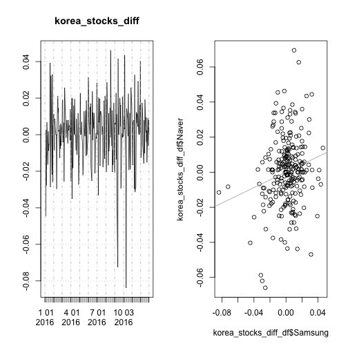
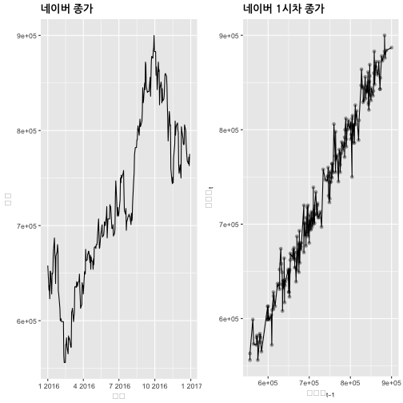
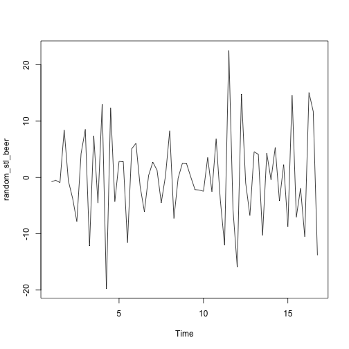
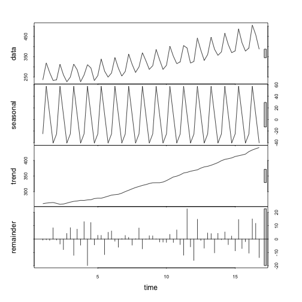

데이터 과학 – 기초 통계
시계열 모형 식별 도구
학습 목표
- 시계열 데이터 입수 및 시각화를 통한 사전 분석 도구를 살펴본다.
- 시계열 데이터 (자기)상관 계수를 이해하고,
acf()자기상관계수를 시각화하여 ARMA 모형 식별에 대한 단초로 활용한다. - 시계열 분해방법에 대해 살펴본다.
금융 시계열 데이터 1
금융 시계열 데이터, 특히 주식관련 데이터는 야후 파이낸스 통해서 신뢰성 높은 데이터를 빠른 시간내 획득할 수 있다.
금융 시계열 데이터 분석환경
금융 시계열 데이터로 작업을 할 경우 가장 먼저 시계열 데이터를 조작해야 되는데, 이런 경우 zoo 를 확장한 xts 팩키지를 많이 사용한다. 정적 시계열 데이터 시각화에는 ggplot2 팩키지, 동적 시계열 데이터 시각화에는 dygraphs 팩키지를 장착하여 활용한다.
# install.packages("xts", repos="http://cloud.r-project.org")
# install.packages("xtsExtra", repos="http://R-Forge.R-project.org")
# 환경설정
library(ggplot2)
library(xts)
library(dygraphs)
library(extrafont)
# library(xtsExtra)금융 데이터 가져오기
금융 데이터를 가져올 때 http://real-chart.finance.yahoo.com/table.csv?s=005930.KS&a=01&b=01&c=2015&d=12&e=31&f=2015&g=d&ignore=.csv url에서 삼성전자(005930.KS), 네이버 NHN(035420.KS)을 지정하고 기간정보를 적절히 설정하여 넘겨준다.
# 야후 금융데이터 -----------------------------------------------------------
# https://finance.yahoo.com/
# 삼성과 네이버 주식시세
samsung_url <- "http://real-chart.finance.yahoo.com/table.csv?s=005930.KS&a=00&b=01&c=2016&d=11&e=31&f=2016&g=d&ignore=.csv"
naver_url <- "http://real-chart.finance.yahoo.com/table.csv?s=035420.KS&a=00&b=01&c=2016&d=11&e=31&f=2016&g=d&ignore=.csv"
yahoo.read <- function(url){
dat <- read.table(url,header=TRUE,sep=",")
df <- dat[,c(1,5)]
df$Date <- as.Date(as.character(df$Date))
return(df)
}
samsung <- yahoo.read(samsung_url)
naver <- yahoo.read(naver_url)금융 데이터 시각화: 단변량
정적 그래프를 통해 시각화하는 경우 ggplot, 인터랙티브 동적 그래프를 통해 시각화하는 경우 dygraphs 를 활용한다.
# 주식시세 시각화 -------------------------------------------------------------
# 정적 시각화
ggplot(samsung, aes(Date,Close)) +
geom_line(aes(color="samsung")) +
geom_line(data=naver,aes(color="naver")) +
labs(color="Legend") +
scale_colour_manual("", breaks = c("samsung", "naver"),
values = c("blue", "brown")) +
labs(
title = "삼성전자, 네이버 종가",
x= "날짜",
y="주가") +
theme(plot.title = element_text(lineheight=.7, face="bold", family="NanumGothic"))
# 동적 시각화
samsung_xts <- xts(samsung$Close,order.by=samsung$Date,frequency=365)
naver_xts <- xts(naver$Close,order.by=naver$Date,frequency=365)
korea_stocks <- cbind(samsung_xts, naver_xts)
names(korea_stocks) <- c("Samsung", "Naver")
dygraph(korea_stocks, ylab="종가",
main="삼성전자, 네이버 종가") %>%
dySeries("Samsung",label="삼성전자") %>%
dySeries("Naver",label="네이버") %>%
dyOptions(colors = c("blue","green")) %>%
dyRangeSelector()Error in loadNamespace(name): there is no package called 'webshot'
시계열 데이터 산점도
네이버와 삼성전자 두 기업 주가 및 일별 수익률을 산점도로 찍어보면 상관관계를 확인할 수 있다.
# 상관계수 -------------------------------------------------------------------
korea_stock_df <- left_join(samsung, naver, by="Date")
names(korea_stock_df) <- c("Date", "Samsung", "Naver")
plot(korea_stock_df$Date, korea_stock_df$Samsung, type="l", col="blue", ylim = c(100000, 2000000), main="삼성전자, 네이버 종가")
lines(korea_stock_df$Date, korea_stock_df$Naver, col="darkgreen")
# 산점도
plot(korea_stock_df$Samsung, korea_stock_df$Naver)
abline(coef=coef(lm(korea_stock_df$Naver~korea_stock_df$Samsung)), col="darkgray")
# 수익률
korea_stocks_diff <- diff(log(korea_stocks), diff=1)
par(mfrow=c(1,2))
xts::plot.xts(korea_stocks_diff)
korea_stocks_diff_df <- data.frame(korea_stocks_diff)
plot(korea_stocks_diff_df$Samsung, korea_stocks_diff_df$Naver)
abline(a=0.00002607821, b=0.22059696365, col="darkgray")
시계열 데이터 상관계수
삼성전자와 네이버 두 회사 주가 및 주식수익률에 대한 상관계수도 계산할 수 있다.
cor(korea_stocks) Samsung Naver
Samsung 1.0000000 0.8422533
Naver 0.8422533 1.0000000
cor(korea_stocks_diff[-1,]) Samsung Naver
Samsung 1.0000000 0.1939654
Naver 0.1939654 1.0000000
자기상관계수(Autocorrelation)
자기상관계수는 시계열에서 매우 중요한 역할을 차지하고 있다. 시계열 데이터의 자기상관은 시차를 1, 2, … 등 여러 시차를 두고 자기상관을 크게 갖을 수 있다.
p1 <- ggplot(naver, aes(Date,Close)) +
geom_line() +
labs(
title = "네이버 종가",
x= "날짜",
y="주가") +
theme(plot.title = element_text(lineheight=.7, face="bold", family="NanumGothic"))
# 시차 1을 갖는 시계열 산점도 그리기
naver_df <- as.data.frame(cbind(naver$Close[-length(naver$Close)], naver$Close[-1]))
colnames(naver_df) <- c("naver_t", "naver_t_1")
p2 <- ggplot(naver_df, aes(naver_t, naver_t_1)) +
geom_line() +
geom_point(alpha=0.3) +
labs(
title = "네이버 1시차 종가",
x=expression(네이버[t-1]),
y=expression(네이버[t])
) + theme(plot.title = element_text(lineheight=.7, face="bold", family="NanumGothic"))
grid.arrange(p1, p2, ncol=2)
수작업으로 자기상관계수를 계산하는 방식은 다음과 같고, acf 함수를 활용하면 이를 쉽게 계산도 하고, 시각적으로 확인도 가능하다.
# 네이버 주식 상관계수 ------------------------------------------------------------------------------
cor(naver_df$naver_t, naver_df$naver_t_1)[1] 0.9874287
acf(naver$Close, lag.max = 2, plot = FALSE)
Autocorrelations of series 'naver$Close', by lag
0 1 2
1.000 0.986 0.972
acf(naver$Close, plot = TRUE)
시계열 분해 2
- 계절성(\(S_t\)): 계절변동(Seasonality)은 계절적 요인으로 일정한 주기를 갖고 반복적으로 유사한 패턴으로 변화하는 것으로 항상 고정되고 이미 알려진 주기를 갖는다.
- 추세성(\(T_t\)): 시계열의 장기적인 진화과정을 반영하는 것으로 상승 혹은 하락 방향성이 있을 때 존재하고 반듯이 선형일 필요는 없다.
- 순환성(\(C_t\)): 반복되나 주기성이 없는 변동을 반영하는 것으로 통상적으로 적어도 2년의 기간이 필요하다.
- 불규칙성(\(I_t\)): 불규칙성(Irregularity)은 랜덤으로 비정규적인 영향을 반영하는 것으로 계절성, 추세성, 순환성이 제거된 후 남은 단차 부분을 반영한다.
가법 모형(additive model)으로 상기 구성요소를 시계열 모형을 표현하면 다음과 같다.
\[y_t = T_t + C_t + S_t + I_t\]
승법 모형(multiplicative model)으로 상기 구성요소를 시계열 모형을 표현하면 다음과 같다.
\[y_t = T_t \times C_t \times S_t \times I_t\]
특히, loess를 활용한 STL(Seasonal and Trend decomposition using Loess)는 순환성이 추세성에 반영된 계절성(\(S_t\))과 추세성(\(T_t\))만으로 시계열을 분해하는데 비선형성은 loess()가 그 역할을 담당한다.
STL을 활용한 장점은 Forecasting: principles and practice, STL decomposition에 설명되어 있다.
가법 시계열 분해: 수작업 3
# 환경설정 ------------------------------------------------------------------------
# library(extrafont)
# library(fpp)
# 1. 가법 시계열분해---------------------------------------------------------
data(ausbeer)
ausbeer_ts <- ts(tail(head(ausbeer, 17*4+2),17*4-4), frequency = 4)
plot(ausbeer_ts)
## 1.1. 추세 제거------------------------------------------------------------
trend_beer <- ma(ausbeer_ts, order = 4, centre = T)
plot(ausbeer_ts)
lines(trend_beer)detrend_beer <- ausbeer_ts - trend_beer
plot(detrend_beer)## 1.2. 계절성------------------------------------------------------------
# m_beer <- t(matrix(data = detrend_beer[-c(1,2)], nrow = 4))
m_beer <- t(matrix(data = detrend_beer, nrow = 4))
seasonal_beer <- colMeans(m_beer, na.rm = T)
seasonal_beer <- ts(rep(seasonal_beer,16), start=1956, frequency=4)
plot(seasonal_beer)## 1.3. 불규칙성------------------------------------------------------------
seasonal_beer <- colMeans(m_beer, na.rm = T)
random_beer <- ausbeer_ts - trend_beer - seasonal_beer
plot(random_beer)## 1.4. 복원------------------------------------------------------------
par(mfrow=c(2,1), family="NanumGothic")
par(mar=c(2, 2, 1.5, 2), xaxs='i', yaxs='i')
recomposed_beer <- (trend_beer + seasonal_beer + random_beer)
plot(ausbeer_ts, main="원본 맥주 데이터", xaxt="n")
plot(recomposed_beer, main="시계열 재합성 맥주 데이터")승법 시계열 분해: 수작업
# 2. 승법 시계열분해---------------------------------------------------------
data(AirPassengers)
ap_ts <- AirPassengers
plot(ap_ts)
## 1.1. 추세 제거------------------------------------------------------------
trend_ap <- ma(ap_ts, order = 12, centre = T)
plot(ap_ts)
lines(trend_ap)
detrend_ap <- ap_ts / trend_ap
plot(detrend_ap)## 1.2. 계절성------------------------------------------------------------
ap_mat <- t(matrix(data = detrend_ap, nrow = 12))
seasonal_ap <- colMeans(ap_mat, na.rm = T)
plot(as.ts(rep(seasonal_ap,12)))## 1.3. 불규칙성------------------------------------------------------------
random_ap <- ap_ts / (trend_ap * seasonal_ap)
plot(random_ap)## 1.4. 원시계열 복원------------------------------------------------------------
par(mfrow=c(2,1), family="NanumGothic")
par(mar=c(2, 3, 1.5, 2), xaxs='i', yaxs='i')
recomposed_ap <- (trend_ap * seasonal_ap * random_ap)
plot(ap_ts, main="원본 항공여객 데이터", xaxt="n")
plot(recomposed_ap, main="시계열 재합성 항공여객 데이터")가법 시계열 분해: 자동화
# 2. 수작업 자동화, decompose(), stl() ------------------------------------
# 가법모형
decompose_beer <- decompose(ausbeer_ts, "additive")
plot(ausbeer_ts)plot(decompose_beer$seasonal)plot(decompose_beer$trend)plot(decompose_beer$random)plot(decompose_beer)
승법 시계열 분해: 자동화
# 승법모형
decompose_air <- decompose(ap_ts, "multiplicative")
plot(ap_ts)
plot(decompose_air$seasonal)plot(decompose_air$trend)plot(decompose_air$random)plot(decompose_air)맥주 데이터 시계열 분해: stl() 자동화
# stl() : ausbeer 데이터 ------------------------------------
stl_beer <- stl(ausbeer_ts, s.window = "periodic")
seasonal_stl_beer <- stl_beer$time.series[,1]
trend_stl_beer <- stl_beer$time.series[,2]
random_stl_beer <- stl_beer$time.series[,3]
plot(ausbeer_ts)
plot(seasonal_stl_beer)plot(trend_stl_beer)plot(random_stl_beer)
plot(stl_beer)
항공여객 데이터 시계열 분해: stl() 자동화
# stl() : 항공여객 데이터 ------------------------------------
ap_stl <- stl(ap_ts, s.window = "periodic")
seasonal_ap_stl <- ap_stl$time.series[,1]
trend_ap_stl <- ap_stl$time.series[,2]
random_ap_stl <- ap_stl$time.series[,3]
plot(ap_ts)plot(seasonal_ap_stl)plot(trend_ap_stl)plot(random_ap_stl)
plot(ap_stl)